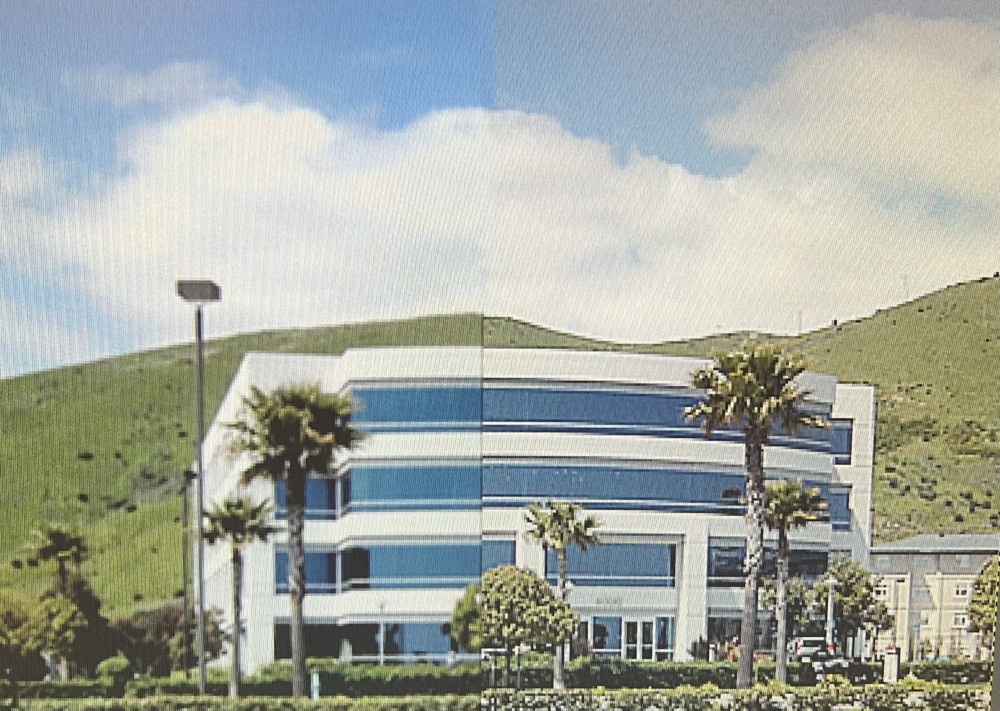
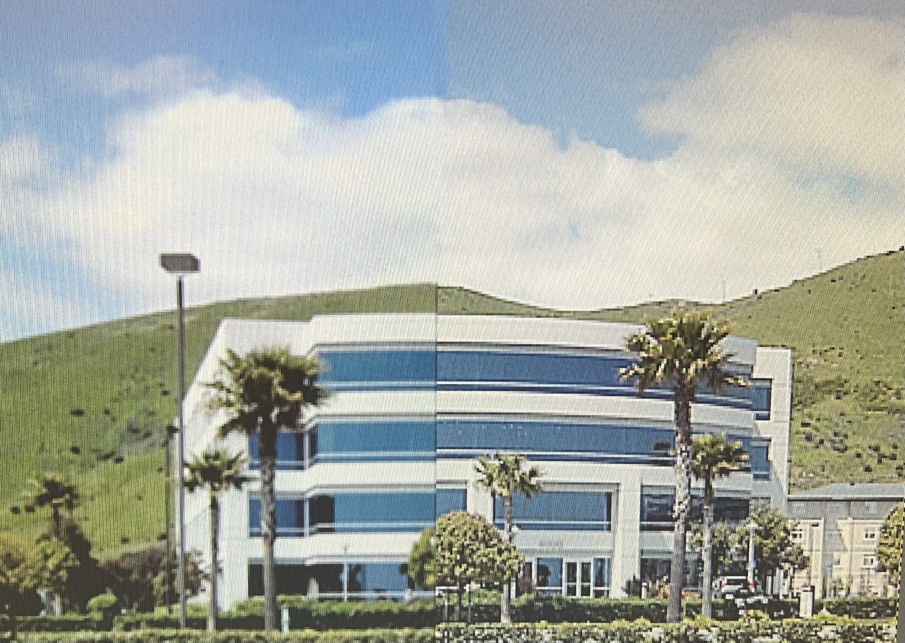
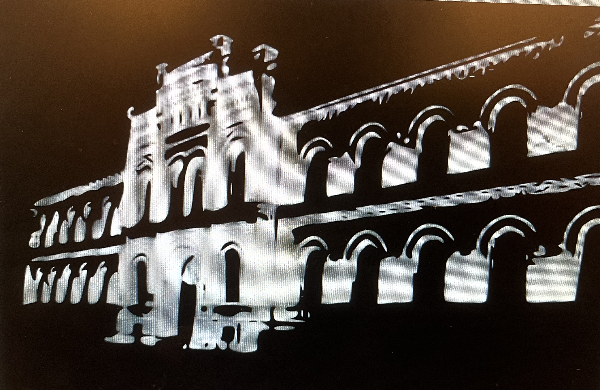
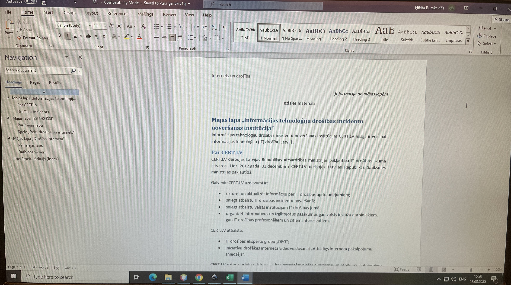
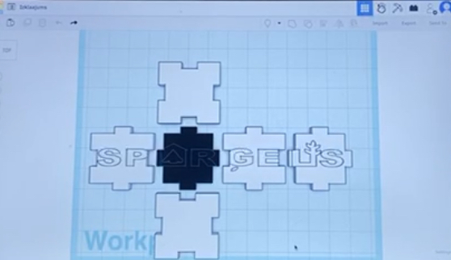
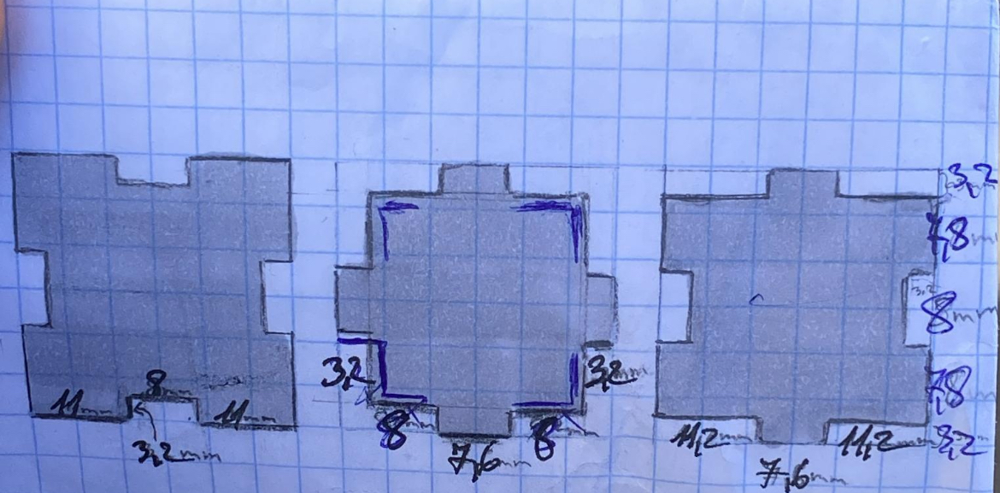

GIMP.
Darbs ar GIMP bija ļoti interesants un aizraujošs, jo ļāva izmēģināt dažādus rīkus un efektus attēlu rediģēšanā. Strādājot ar šo programmu, es iemācījos veidot un apstrādāt grafiku, kas noteikti noderēs gan skolā, gan nākotnē. Šī pieredze palīdzēja man labāk izprast digitālās mākslas un attēlu rediģēšanas pamatus, attīstot radošās prasmes un tehnisko precizitāti.
 

Inkscape.
Darbs ar Inkscape bija ļoti interesants un noderīgs, jo ļāva iepazīt vektorgrafikas veidošanas pamatus. Strādājot ar šo programmu, es iemācījos radīt precīzus un kvalitatīvus zīmējumus, izmantojot dažādus rīkus un slāņus. Šī pieredze palīdzēja attīstīt radošumu un uzlabot grafiskā dizaina prasmes, kas var noderēt gan mācībās, gan nākotnes projektos.

Word.
Strādājot ar Word, bija interesanti izmantot dažādas rīku iespējas, lai veidotu profesionālus dokumentus. Tas bija ļoti noderīgi ikdienas darba uzdevumos, jo palīdzēja ātri un efektīvi rediģēt tekstus, pievienot attēlus un formatēt dokumentus.
Excel.
Darbs ar Excel bija ļoti interesants un noderīgs, jo tas ļāva efektīvi apstrādāt datus un veikt dažādus aprēķinus. Pateicoties funkcijām kā formulas un grafiki, darbs kļuva strukturētāks un pārskatāmāks.

Tinkercad.
Darbs ar Tinkercad bija aizraujošs, jo tas ļāva viegli modelēt 3D objektus un izprast digitālās modelēšanas pamatus. Programma palīdzēja attīstīt telpisko domāšanu un radošumu, radot dažādus projektus no vienkāršiem līdz sarežģītākiem. Šī pieredze būs ļoti noderīga nākotnē, īpaši, ja vēlos turpināt apgūt 3D dizainu un inženieriju.
 Montāža.
Video montāža ļauj padarīt materiālu daudz dinamiskāku un pievilcīgāku skatītājiem. Ar pareiziem pārejas efektiem un radošām idejām var izcelt svarīgākos brīžus un radīt emocionālu iespaidu. Turklāt šis process sniedz iespēju eksperimentēt un atrast jaunus veidus, kā izteikt idejas vizuāli.